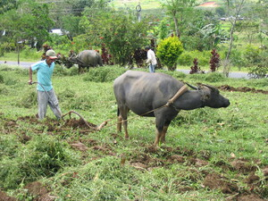

daru 
/dadu/
n.
“plow”
Fr. Ceb. daru
n.
plow
Wrd.Gloss: plow
Cult. This is now an accepted word in the Matigsalug lexicon, replacing the term daddu.
Ke egsilaban e, egdaruwen e.
Once the weeds have been burnt, he will plough it.
Eng. plow, a; plough, a
Tag. aráro
Ceb. daru
Ilo.: arádo
OCM: General Tools (412)
Online dict status: -
Usage level: M
vi.
for someone (egdaru, migdaru/indaru/pigdaru, agent, eg><ø-) to plow some land (egdaruwen, patient, eg><en-) somewhere (egdaruwan, migdaruwan/indaruwan/pigdaruwan, location, eg><an-)
Egdaru e pad kaaselem su eyew egkeimpusan e ka himu ku.
I'm going to plow tomorrow in order to get my work finished.
Eng. plow; plough
Online dict status: -
Usage level: M
Updated by: RJH,AAA,RJH,QDL,RJH
Last updated: 19/Sep/2012
"nararui" in text "Examples of Anit"
"daru" in text "Dreaming of being Rich"
"daru" in text "Dreaming of being Rich"
"daru" in text "Due daruwan etew ne nekegsinug-ung diye te dalan"
"daru" in text "Due daruwan etew ne nekegsinug-ung diye te dalan"
"egdaru" in text "Due daruwan etew ne nekegsinug-ung diye te dalan"
"migdaru" in text "Due daruwan etew ne nekegsinug-ung diye te dalan"
"igdaru" in text "Due daruwan etew ne nekegsinug-ung diye te dalan"
This page last updated: 28-Dec-2019
Copyright © 2009-2014, Matigsalug Language Christian Association, Inc